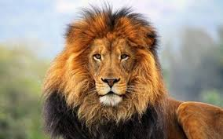

Litoral Maricá
Considerada um paraíso natural, com 46 quilômetros de praias e seis lagoas, além de canais, ilhas, rios, cachoeiras, trilhas, serras e restinga, Maricá é o cenário ideal para quem procura beleza natural e opções de atividades ao ar livre..
Inteligência Artificial
A Inteligência Artificial (IA) é a capacidade de programas e dispositivos de realizar tarefas utilizando algoritmos que simulam o raciocínio humano com base em padrões aprendidos.
Atualmente, o estudo da IA já está avançado, e a capacidade de aprendizado dos robôs, mais semelhante à das pessoas. Os 3 principais tipos de inteligência artificial são Inteligência Artificial Limita (ANI), Inteligência artificial geral (AGI) e Superinteligência (ASI).

Leão
O leão é um mamífero pertencente à ordem Carnivora e família Felidae, sendo conhecido como “rei das selvas”. Ele se alimenta de outros animais, como gnus e zebras, e vive em grupos, que apresentam divisões bem marcadas, sendo o macho responsável pela defesa do grupo e a fêmea pela caça e cuidado com os filhotes.